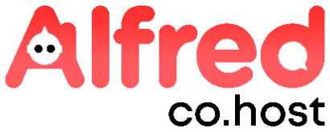

Alfred Co.host platform
The cockpit hosts use to configure Alfred. If the docs explain how Alfred works, the platform is where you make it work — an owner-facing web app to add properties, teach Alfred what to know, choose which channels to go live on, and manage the subscription.

The product
What Alfred Co.Host is
Alfred is an AI guest assistant for hotels, BnBs and vacation rentals. It handles guest messaging across Airbnb, Booking.com, WhatsApp, email and more — answering in seconds, in any language, 24/7, drawing from each property’s own information rather than generic scripts. The platform is the control room behind it: where the host sets up everything the assistant guests actually talk to needs to know.
Role
Product & UI design + frontend
Timeframe
2024 – ongoing
UI & FRONTEND STACK
Figma → React, Github, Claude Code, Codex
Who built what
The core — dashboard, KB editor, property management, subscriptions, profile — was designed and prototyped by me in Figma and implemented by a developer. The booking calendar, PMS integrations, embedded documentation and both chatbots (Alfred and Robin) I prototyped and vibecoded myself with Claude Code and Codex. Built for hospitality operators with wildly uneven digital literacy — from the tech-savvy property manager to the family B&B that has used nothing but WhatsApp for three years.
Alfred in a blink
What users actually do in the platform
Create properties & their library
Add each property and build its knowledge base from preconfigured library items — fields already named and described, so you fill in rather than start from scratch.
Manage each property’s subscription
Every property has its own plan, billing cycle and renewal date — all aggregated into one tabular view in your profile.
Test the AI before going live
Chat with Alfred using your own KB, across stay phases (pre-stay, stay, post-stay), and confirm it’s ready before guests ever reach it.
Customize the edges
Add custom fields, shape the escalation logic, and choose channels per property — WhatsApp, Telegram, or an iframe on your own site.
The challenges
Four problems worth solving
Configuring an AI, not a back-office
Most B2B tools have a user who already knows what they want. Here the user has to teach a system — what the chatbot knows, how much, for which property. The job was making that clear to someone who has never heard the words “knowledge base.”
Wildly uneven digital literacy
From the co-host with 20 properties to the owner of a single flat who signed up on a friend’s tip. The interface had to serve both — without patronising the first or overwhelming the second. No 12-step onboarding, no technical glossary.
Multi-property, separate subscriptions
Every property lives independently: its own plan, live or not, different channels active. Making that parallelism legible — without it collapsing into a configuration table — was non-trivial.
Design decisions into production React
The vibecoded work closed the gap between prototype and implementation directly — Claude Code to write real components, not mockups. It changed how I design: I now think in terms of state, not just screens.
Visual identity
Calm by design, not understyled by accident
Both the colour direction — chosen together with the team — and the broader UI of the platform, which I owned, were a deliberate bet on simplicity. The audience is huge and spans roughly 25 to 65: a single property owner and a 20-unit professional co-host use the same screens. That ruled out anything that depended on being digitally fluent.
So the interface is quiet, familiar and unhurried — legible type, generous spacing, one accent colour, no decorative motion. Not ultra-modern, not animation-heavy, not a parade of shapes and gradients. Restraint is the feature: the real fear was that a less tech-confident host would get lost in a busy, “designed” interface — that visual noise would read as stress, not delight. Every element earns its place, and the rest gets out of the way to keep cognitive load low without ever feeling dull.
The Alfred red, and why it leans on Airbnb
The Alfred red is, unmistakably, a derivative of the Airbnb red — and that was the point. For a worldwide audience that already lives inside Airbnb every day, a closely related red buys instant cognitive continuity and a quiet sense of reassurance: it feels native to the world hosts already operate in, before they’ve read a single label.
Logo
Colour lineage
Alfred red
#FF4D4D · accent
Airbnb “Rausch”
#FF5A5F · the reference
Approach
Decisions that came from the user
Flat navigation by design
The most deliberate Information Architecture decision was flattening navigation. Five main clusters — Dashboard, Property management, Calendar, Integrations, Documentation — reachable from the side drawer with no sub-menu hierarchy. No three-level paths, no “Settings > Property > Channel > Advanced.” The complexity exists, but it’s handled inside each cluster, not through navigation. A host juggling three properties shouldn’t have to remember where things are — they should find them by instinct the first time and by muscle memory the second.
Per-property subscriptions
The subscription model mirrors the reality of multi-property hospitality: properties aren’t the same and don’t carry the same volume. Each has its own plan, billing cycle (monthly/yearly) and renewal date. The host profile aggregates all of it into a single tabular view — no navigating property by property.
Onboarding: the first login forces you to create
On first login the host is guided to create their first property before anything else. It guarantees the system has something to work with — but it also trains: the host learns the platform’s mental model the moment they first use it. The full funnel: site → pick a plan → sign up with a 15-day trial → first login → forced creation of the first property. Onboarding as UX, not marketing.
Property view: everything inline, zero drill-down
From the property list you do everything without entering a sub-page: open the KB editor, duplicate a configuration, test the chatbot, manage activation per channel. Actions are inline icons on each row, the “Go live” toggle is immediate, and supported channels — WhatsApp, Telegram, and an iframe for embedding Alfred on your own site — are visible at a glance for every property. For anyone running more than one place, that’s the difference between a tool and a usable tool.

KB editor: killing blank-page anxiety
The most critical onboarding moment is asking a host to “enter information about your property.” The instinctive reaction: which information? all of it? in how much detail? The answer was to map the categories a guest statistically needs most — Access & Check-In, House Rules, Amenities, Local Tips, Emergency Contacts — and ship preconfigured library items for each, with fields already named and described. The host doesn’t write from scratch; they fill in: “WiFi Network Name — the name of the WiFi network guests should connect to.”
The strength of the KB isn’t the volume of information but the granularity of the items — each field is a self-contained molecule. Alfred doesn’t need paragraphs, it needs precise, well-isolated facts; the prompt does the contextualising. Even a host who fills in three fields gets a working chatbot.
Terminology consistent with the docs
Every term in the platform — library item, stay phase, knowledge base, hands-off number — is the same one used in the documentation, chosen after researching industry jargon, talking to operators, and keyword analysis with Semrush. A host who read the docs should land in the platform with no mental translation.
The feature
Two chatbots, two jobs
The platform runs two conversational surfaces side by side — both vibecoded with Claude Code, both built on the same logic pointed in opposite directions. One lets the host test the product they’re building; the other helps them learn how to run the platform itself.
Alfred — test the assistant
Left · the product you’re building
Straight from the property list, the host types a question as if they were their own guest. Alfred answers using exactly what was entered in the KB, and a stay-phase selector (pre-stay, stay, post-stay) reflects how questions shift across the moment of the stay. The reality check: before handing Alfred’s contact to guests, you confirm it knows how to reach the flat, the WiFi code, the check-out time. It stops being an opaque system that “should work” and becomes something you can interrogate yourself.
Robin — learn the platform
Right · how to use the tool
Robin runs the same logic in the opposite direction: it answers the host’s questions about the platform itself — subscriptions, channels, the KB editor — not the properties. The manager’s assistant, not the guest’s. Where Alfred is the thing being configured, Robin is the help desk that explains how to configure it.
Microcopy & friction
Friction calibrated to the stakes
Not every dialog deserves the same weight. A sensitive action has to seize attention and not let go until the host understands the consequence; a routine, repetitive one should get out of the way. Two opposite ends of that scale — and the copy stays in the language hosts actually use in hospitality, never generic SaaS-speak.
Force the focus, then explain in full
Deleting a subscription dims the whole app behind a modal that can’t be ignored — the action is the only thing in focus. Here I deliberately allowed more copy: it spells out exactly what happens (the plan stays active until the end of the billing cycle, then the AI assistant is unpublished) and points to the gentler alternative — untoggling Go live. Exhaustive, but kept tight: two short paragraphs, the irreversible consequence in red, and the two choices weighted by colour, never a bare “are you sure?”.
Strip it down to a form everyone knows
Adding a custom library item is the opposite job. Everyone has filled in a closed, guided form before, so I leaned on that muscle memory: label, short description, a type toggle (string, image, video), a drop zone. No instructions, no theory of what a “custom item” is — just named fields and a clear save. The friction is near-zero because the pattern is already familiar, and the same vocabulary from the docs (library item, info type) carries straight through.
Build story
Two ways of building
The whole design and prototyping perimeter is mine. For the core, I worked in Figma alongside the developer — from the first wireframe to the handoff on Jira, the developer implemented from my prototypes. The second phase — booking calendar, PMS integrations, embedded documentation, Alfred and Robin — bypassed Figma entirely: it came straight from my head, built conversationally in React with Claude Code and Codex. No mockup in between. I described the component, vibecoded it, reviewed it visually, and adjusted it to fit the existing design system — a continuous loop, not prompt-and-paste.
The component I’m proudest of technically is the inline chatbot test — it requires state management between the property list and the conversation panel, and it’s where product logic and implementation touch most closely. It’s also the one that works best in the demo.
Limits & what’s next
Honest about the edges
Touchpoints still need to expand. Alfred reaches guests on a focused set of channels today. The next step is widening that coverage — more messaging surfaces and integrations — so a host can meet guests wherever they already are, not where the platform happens to support.
We rely on third parties we don’t control. The assistant is built on external LLMs and channels like WhatsApp, so their availability, policy changes and pricing sit outside our hands. It’s a deliberate trade-off — and one we’re transparent about: the dependency is spelled out in the terms & conditions accepted at subscription.
The host can’t pick Alfred’s contact number. The number guests message Alfred on is assigned by us, not chosen by the client — the only number the host controls is the hands-off number, the one Alfred escalates to when it passes a conversation to a human. Letting hosts bring or choose Alfred’s own number is something to improve later.
See it live
If the demo doesn’t load pages correctly, just refresh the page — it usually comes back on a second try. And for product-protection reasons, this is a partial demo: not every flow is enabled.
Get in touch
Let’s talk.
Got a project, a role, or just want to swap kitty pictures and plant-based recipes? I’d love to hear from you.